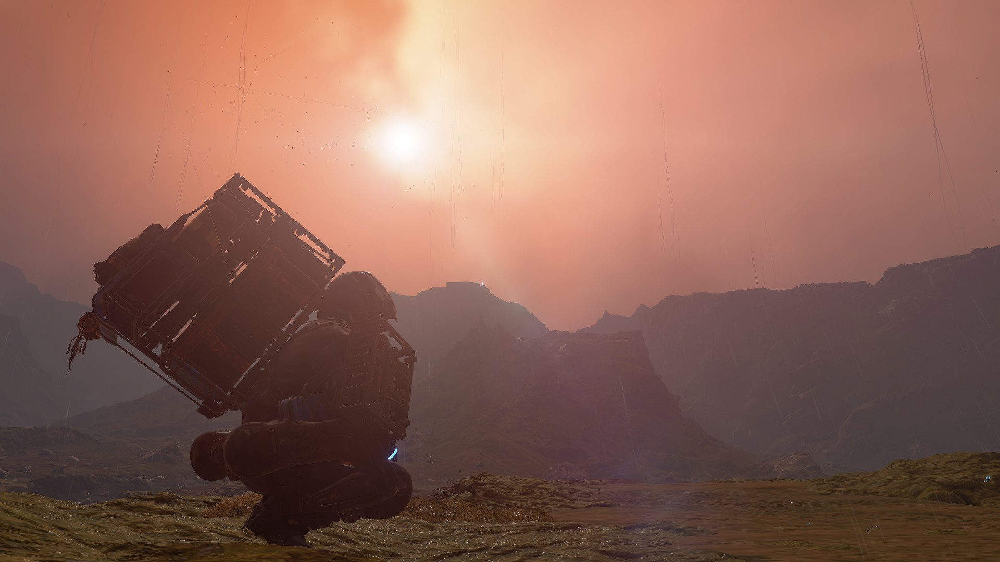
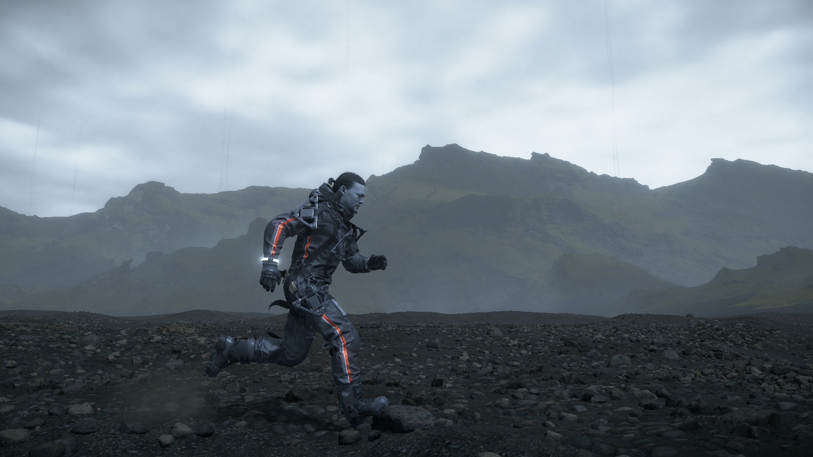

Premise

Death Stranding is a 2019 action game developed by Kojima Productions and published by Sony Interactive Entertainment for the PlayStation 4. It is the first game from director Hideo Kojima and Kojima Productions after their split from Konami in 2015. A Windows port licensed by Sony was released by 505 Games in July 2020. A director's cut version was released for the PlayStation 5 in September 2021, followed by a release for Windows in March 2022.
The game is set in the United States following a cataclysmic event which caused destructive creatures to begin roaming the Earth. Players control Sam Porter Bridges (Norman Reedus), a courier tasked with delivering supplies to isolated colonies and reconnecting them via a wireless communications network. Alongside Reedus, the game features actors Mads Mikkelsen, Léa Seydoux, Margaret Qualley, Troy Baker, Tommie Earl Jenkins, and Lindsay Wagner, in addition to the likenesses of film directors Guillermo del Toro and Nicolas Winding Refn as supporting characters.
Locations

Death Stranding is set in a future version of the USA that has been torn apart by strange creatures called Beached Things. Despite the American setting, keen-eyed players will have noticed that the landscapes are not what one would expect from the country. Players are met with black soil, rugged terrain, and moss-covered mountains.
This kind of scenery is more akin to what one would expect from Iceland. It has had its landscape uniquely shaped by millennia of volcanic activity and geological forces that have created steep mountains and deep fjords. This comes as no surprise, as Kojima's travels have taken him to the tiny European country, which is also where he discovered the music of Low Roar.
The Beach

The Beach is certainly the most unique location of all in Deah Stranding; with its stunning visuals and an ether-esque aesthetic The Beach evokes a feeling of greater powers at play, which in the context of the game isn't exactly baseless
The Beach acts as a sort of limbo, a place between the world of the living and what comes after it. It is a manifestation of humankind's consciousness and their personal conception of death. As such, the Beach is a phenomenon common to all humans and unique to each individual. Each person has an instance of the Beach that is personal to them, given form by their thoughts and beliefs. Because of this, the Beach is often described as a "multiverse", as all souls inhabit a personal Beach (in most cases). This is in contrast to the land of the living, where everyone's physical body inhabits the same universe. No other animal life manifests a Beach, and therefore they do not necrotize and form a BT if not incinerated.
There are cases where several souls inhabit the same Beach, however, like with soldiers who die in a war. The massive amounts of deaths in short periods of time and the common feeling of hatred and despair cause the soldiers' souls to be stranded in a shared Beach, shaped like a battlefield, where they continue to fight, unable to move past the limbo. Large numbers of deaths at the same time seem to also result in shared Beaches.